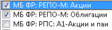
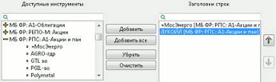

Система QUIK позволяет получать информацию с нескольких секторов рынка (разные биржи, режимы торгов и т.д.). Ценные бумаги, индексы и прочие понятия, характеризующие уникальный вид данных, обобщенно именуются финансовыми или биржевыми инструментами. Однотипные данные, относящиеся к одному сектору рынка, группируются в классы инструментов.
Пример классов:
Акции 1-го уровня Московской Биржи, Облигации 1-го уровня Московской Биржи,
Индексы Московской Биржи.
Класс инструментов содержит список инструментов - перечень ценных бумаг или индексов. Список инструментов соответствует списку (листингу) бумаг в данном секторе рынка.
Пример списка инструментов:
Ростелеком, ЛУКОЙЛ, Сбербанк-п.
Каждый класс инструментов имеет список параметров, характеризующих ход торгов по его инструментам.
Пример списка параметров:
Лучшая цена спроса, Спрос по лучшей цене, Количество заявок на покупку.
Для исключения из списка ненужных значений предназначены фильтры . Исключенные (отфильтрованные) значения не отображаются в таблицах.
Правила работы с классами
Выбор элементов в классе осуществляется с помощью фильтров или раскрывающихся списков.
Выбор данных из класса с помощью фильтра
Выбор осуществляется нажатием на выбранном классе клавиши «пробел» либо левой кнопки мыши. Повторное нажатие приводит к отказу от выбора класса. Для выбора данных внутри класса используйте фильтр.

Статусы выбора для классов:
 - выбраны все элементы списка, фильтр не установлен;
- выбраны все элементы списка, фильтр не установлен;
- - с помощью фильтра отобрано несколько элементов из списка;
 - ни один элемент из списка не выбран
- ни один элемент из списка не выбран
При отказе от класса, по которому был установлен какой-либо фильтр, сброс настроек фильтра не происходит. Если класс будет снова выбран, фильтр активизируется. Чтобы
отменить фильтр по классу, снимите на нем отметку (флажок) либо очистите в настройках фильтра список выбранных параметров.
Нажатием кнопки «Выделить все» выбираются все классы из списка доступных. При этом если по каким-либо классам уже установлены фильтры по инструментам и/или параметрам, то настройки фильтров сохраняются.
Нажатием кнопки «Очистить» снимается выделение по всем классам. Если какой-либо из классов содержит настроенный фильтр, то при выборе данного класса фильтр активируется.
Выбор данных из класса с помощью раскрывающихся списков
Классы в раскрывающемся списке помечены символом «+», если список свернут, или символом «–», если список раскрыт. Для отображения списка инструментов выбранного класса, нажмите на классе клавишу «пробел» либо левую кнопку мыши на символе «+». Повторное нажатие приводит к сворачиванию списка.

Выбор данных из класса осуществляется переносом выделенных параметров из списка доступных (слева) в список выбранных (справа) с помощью кнопок «Добавить», «Добавить все», «Убрать», «Очистить». Перенос параметров также осуществляется двойным нажатием левой кнопки мыши.
Если это предусмотрено типом таблицы, список выбранных параметров можно упорядочить, выделив параметр и перемещая его по списку кнопками «вверх» и «вниз».
- Чтобы выделить сразу несколько параметров по порядку, держите нажатой клавишу «Shift». Чтобы выделить выборочно несколько параметров, удерживайте нажатой клавишу «Ctrl».